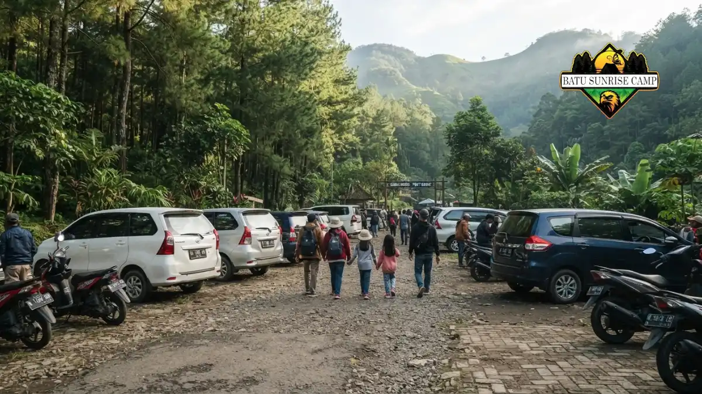

Kendaraan yang cocok untuk ke Coban Rondo adalah motor atau mobil pribadi, karena jalurnya menanjak dan berkelok. Transportasi umum tetap bisa dipakai dengan transit.
Apa itu Coban Rondo dan di mana letaknya?
Coban Rondo adalah air terjun di Desa Pandesari, Kecamatan Pujon, Kabupaten Malang, Jawa Timur, yang berada di lereng Gunung Kawi pada ketinggian sekitar 1.135 mdpl.
Menurut detikJatim (14 September 2023) yang mengutip situs Pemkab Malang, tinggi air terjun ini sekitar 84 meter dengan sumber air dari mata air Cemoro Dudo.
Kawasan wisatanya berada di wilayah pengelolaan hutan Perhutani KPH Malang, dikelilingi hutan pinus, dan sudah dikenal sejak era 1980-an.
Dari sisi jarak, Orami (April 2025) menyebut Coban Rondo berjarak sekitar 12 km dari pusat Kota Batu dan sekitar 20 km dari pusat Kota Malang. Sumber lain menyebut angka hingga sekitar 30 km dari Kota Malang.
Perbedaan ini wajar karena titik awal dan rute yang dipakai tidak sama. Waktu tempuh yang umum dilaporkan adalah sekitar 30 menit dari Kota Batu dan sekitar satu jam dari Kota Malang.
Selain air terjun, kawasan ini memiliki Taman Labirin, area camping, dan beberapa wahana.
Daya tarik yang beragam ini membuat banyak pengunjung datang bersama keluarga, sehingga pilihan kendaraan menjadi keputusan penting sebelum berangkat.
Kendaraan apa saja yang bisa dipakai ke Coban Rondo?
Pengunjung Coban Rondo bisa memakai motor, mobil pribadi, mobil sewa, bus pariwisata, atau kombinasi angkutan umum dan ojek, dengan pilihan terbaik bergantung pada jumlah rombongan.
Perbandingan berikut merangkum karakter tiap pilihan untuk perjalanan ke Coban Rondo di Pujon.
| Kendaraan | Cocok untuk | Kelebihan | Batasan |
|---|---|---|---|
| Motor | Solo atau berdua | Lincah, hemat, mudah parkir | Terbuka terhadap hujan dan kabut, menuntut stamina |
| Mobil pribadi | Keluarga, rombongan kecil | Nyaman, muat banyak barang, terlindung dari cuaca | Perlu terbiasa menyetir di tanjakan dan tikungan |
| Mobil sewa | Wisatawan dari luar kota | Fleksibel, bisa dengan sopir | Biaya sewa dan bahan bakar, perlu cek kondisi unit |
| Bus pariwisata | Rombongan besar, gathering | Biaya per orang bisa lebih rendah | Perlu koordinasi jadwal dan kemampuan bus di jalur sempit |
| Angkutan umum dan ojek | Pelancong tanpa kendaraan | Tanpa perlu menyetir | Transit berkali-kali, waktu lebih lama |
Tidak ada satu kendaraan yang terbaik untuk semua orang. Kunci pemilihannya adalah mencocokkan jumlah penumpang, anggaran, dan pengalaman berkendara dengan karakter jalur menuju Coban Rondo.
Bagaimana kondisi jalan menuju Coban Rondo?
Jalan menuju Coban Rondo di Pujon sudah beraspal, tetapi berkelok dan menanjak sehingga pengemudi perlu memeriksa rem, ban, serta mendahulukan kehati-hatian di tikungan.
Liputan6 menyebut akses ke Coban Rondo cukup mudah dengan jalan beraspal dan fasilitas parkir yang memadai.
Auto2000 menggambarkan jalur menuju air terjun ini berkelok-kelok dan menanjak, sehingga pengemudi mobil disarankan memakai gigi rendah saat melewati tanjakan.
Jalur pegunungan seperti ini punya tiga risiko utama. Pertama, rem bekerja lebih berat di turunan. Kedua, mesin bisa cepat panas bila dipaksa di tanjakan panjang. Ketiga, permukaan jalan lebih licin saat hujan atau berkabut. Ketiganya bisa dikelola dengan persiapan kendaraan yang baik dan tempo berkendara yang tenang.
Kondisi jalan dapat berubah akibat perbaikan, cuaca, atau kepadatan libur panjang. Gunakan aplikasi peta untuk memantau lalu lintas pada hari keberangkatan, dan jangan memaksakan perjalanan bila cuaca ekstrem.

Area parkir kendaraan di kawasan wisata Coban Rondo dengan deretan motor dan mobil pengunjung.
Apakah motor cocok untuk ke Coban Rondo?
Motor cocok untuk ke Coban Rondo bagi pengunjung sendirian atau berdua karena lincah dan mudah parkir, asalkan rem, ban, dan mesin dalam kondisi baik.
Motor unggul dalam menembus kepadatan dan mudah mencari tempat parkir saat kawasan wisata ramai.
Biaya bahan bakarnya juga umumnya lebih rendah dibanding mobil. Kelemahannya, pengendara langsung terpapar hujan, kabut, dan udara dingin dataran tinggi.
Pengendara sebaiknya mengenakan helm berstandar, jaket, sarung tangan, dan membawa jas hujan.
Pastikan kampas rem, tekanan ban, dan oli mesin diperiksa sebelum berangkat. Panduan terperinci tentang jalur, teknik tanjakan, dan perlengkapan tersedia di artikel tips naik motor ke Coban Rondo.
Apakah mobil cocok untuk ke Coban Rondo?
Mobil cocok untuk ke Coban Rondo bagi keluarga atau rombongan kecil karena nyaman saat hujan dan muat banyak barang, namun pengemudi perlu terbiasa dengan tanjakan.
Mobil memberi perlindungan dari cuaca, ruang untuk anak dan barang bawaan, serta kenyamanan perjalanan yang lebih panjang. Biaya per orang juga bisa lebih murah bila kursi terisi penuh.
Perhatikan dimensi mobil saat memasuki area parkir dan jalur desa yang sempit. Saat akhir pekan dan libur panjang, antrean kendaraan di sekitar Pujon dapat memperlambat perjalanan.
Bisakah ke Coban Rondo naik transportasi umum?
Ke Coban Rondo bisa naik transportasi umum, tetapi harus transit: dari Malang menuju Landungsari, lanjut bus arah Pujon, kemudian ojek atau jalan kaki ke lokasi.
Dokumen Perhutani KPH Malang menggambarkan rute dari Terminal Arjosari memakai mikrolet menuju Terminal Landungsari.
Dari Landungsari, wisatawan naik bus jurusan Kediri atau Jombang, turun di sekitar patung sapi di Pujon, lalu melanjutkan dengan ojek atau berjalan kaki.
Rute ini memerlukan beberapa kali pindah kendaraan dan sangat bergantung pada jam operasional angkutan.
Karena dokumen rujukannya tidak terbaru, konfirmasikan rute dan jam terakhir kendaraan kepada pengemudi atau petugas terminal sebelum berangkat.
Kendaraan apa yang cocok untuk setiap jenis pengunjung?
Untuk ke Coban Rondo, pelancong solo atau berdua cocok memakai motor, keluarga memakai mobil, rombongan besar memakai bus, dan wisatawan tanpa kendaraan memakai ojek.
Pelancong solo atau pasangan mendapat manfaat paling besar dari kelincahan motor. Keluarga dengan anak kecil atau lansia lebih nyaman memakai mobil karena terlindung dari cuaca.
Rombongan kantor atau komunitas, yang menurut Liputan6 sering menjadikan kawasan ini lokasi outbound dan gathering, cenderung lebih efisien dengan bus pariwisata.
Wisatawan yang datang tanpa kendaraan, misalnya lewat bandara atau stasiun di Malang, dapat memakai ojek online atau taksi ke area Pujon, lalu mengatur penjemputan untuk perjalanan pulang. Pilihan ini lebih mahal per orang, tetapi paling sedikit memerlukan transit.
Faktor apa yang menentukan pilihan kendaraan?
Pilihan kendaraan ke Coban Rondo ditentukan oleh jumlah penumpang, kemampuan berkendara di jalan menanjak, cuaca, anggaran, serta jarak asal perjalanan menuju Pujon, Kabupaten Malang.
Jumlah penumpang menentukan efisiensi biaya: satu mobil berisi empat orang sering lebih hemat daripada dua motor ditambah risiko hujan.
Pengalaman berkendara di tanjakan memengaruhi rasa aman, terutama bagi pengemudi yang terbiasa dengan jalan datar perkotaan.
Cuaca pegunungan dapat berubah cepat. Prakiraan dari BMKG membantu menentukan apakah motor masih layak dipilih.
Anggaran mencakup bahan bakar, sewa, parkir, dan tiket. Terakhir, jarak asal perjalanan memengaruhi kelelahan; pengendara motor dari luar kota perlu jeda istirahat lebih sering dibanding pengunjung dari Batu.
Berapa biaya yang perlu disiapkan untuk ke Coban Rondo?
Tiket masuk Coban Rondo dilaporkan Rp35.000 pada hari biasa dan Rp40.000 saat hari libur, belum termasuk parkir, bahan bakar, dan jajan.
Angka tersebut berasal dari Popbela (25 Juni 2026). Sumber lama menyebut tarif lebih rendah, misalnya Rp30.000 untuk hari biasa dan Rp35.000 untuk akhir pekan menurut Liputan6, sehingga tarif tampaknya naik dari waktu ke waktu.
Untuk empat orang, tiket hari libur berarti sekitar Rp160.000 berdasarkan tarif Rp40.000 per orang.
Sumber berbeda juga tidak sepakat soal wahana. Rumah123 dan ulasan Tripadvisor menyebut tiket sudah mencakup Taman Labirin dan beberapa aktivitas, sedangkan Liputan6 mencantumkan tarif wahana terpisah.
Tarif parkir dan biaya kendaraan tidak ditemukan dalam sumber resmi yang bisa dirujuk di sini, jadi siapkan uang tunai cadangan dan tanyakan langsung di loket.
Kapan waktu terbaik berangkat ke Coban Rondo?
Waktu terbaik berangkat ke Coban Rondo adalah pagi hari pada hari kerja, saat jalan lebih lengang, cuaca umumnya lebih cerah, dan loket tiket baru dibuka.
Jam buka dilaporkan berbeda antarsumber: pukul 07.00 sampai 17.00 WIB menurut Orami, dan pukul 07.30 sampai 16.00 WIB menurut Rumah123.
Anggap jam loket paling awal sebagai patokan aman, dan tiba sebelum sore agar tidak terburu-buru.
Akhir pekan dan libur panjang membuat jalur menuju Pujon lebih padat. Bila terpaksa berangkat saat ramai, berangkatlah lebih awal dan beri tambahan waktu tempuh.
Musim hujan menambah debit air terjun, tetapi juga membuat jalan lebih licin, sehingga pengendara motor perlu ekstra waspada.
Apa kesalahan umum memilih kendaraan ke Coban Rondo?
Kesalahan umum pengunjung Coban Rondo adalah berangkat dengan kendaraan kurang prima, mengandalkan satu sumber informasi tiket, dan tidak menghitung waktu tempuh dari Kota Malang.
Kesalahan pertama adalah menyepelekan jalur menanjak sehingga rem aus, ban tipis, atau radiator kurang air baru terasa di tengah perjalanan.
Kesalahan kedua adalah memilih motor untuk rombongan yang membawa anak kecil tanpa rencana cadangan saat hujan.
Kesalahan ketiga adalah menganggap transportasi umum praktis tanpa memeriksa jam kendaraan terakhir, sehingga pulang menjadi sulit.
Kesalahan keempat adalah tidak memverifikasi tarif dan jam buka terbaru, padahal sumber daring menunjukkan angka yang bervariasi.
Bagaimana menyiapkan kendaraan sebelum ke Coban Rondo?
Sebelum ke Coban Rondo, periksa rem, ban, oli, lampu, dan bahan bakar kendaraan, lalu cek prakiraan cuaca BMKG agar perjalanan di jalur pegunungan lebih aman.
Untuk mobil, Auto2000 menyarankan memeriksa oli mesin, air radiator, dan cairan pendingin sebelum menempuh jalur menanjak.
Untuk motor, periksa juga rantai atau sabuk penggerak, kampas rem, serta kondisi aki agar lampu dan klakson berfungsi.
Isi bahan bakar sebelum memasuki area pegunungan, bawa jas hujan, dan simpan nomor darurat. Informasi ini bersifat umum dan tidak menggantikan saran bengkel atau petugas lalu lintas.
Kesimpulan
Kendaraan yang cocok untuk ke Coban Rondo bergantung pada jumlah penumpang dan pengalaman berkendara. Motor cocok untuk pelancong solo atau berdua, mobil untuk keluarga, bus untuk rombongan besar, dan ojek atau transit untuk wisatawan tanpa kendaraan.
Apa pun pilihannya, periksa kondisi kendaraan, pantau cuaca, berangkat pagi, dan verifikasi tarif serta jam buka terbaru. Dengan persiapan itu, perjalanan ke Coban Rondo di Pujon menjadi lebih aman dan nyaman.